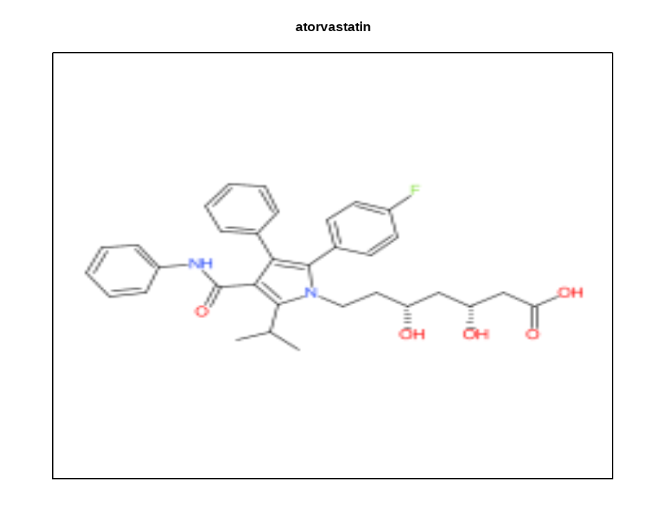
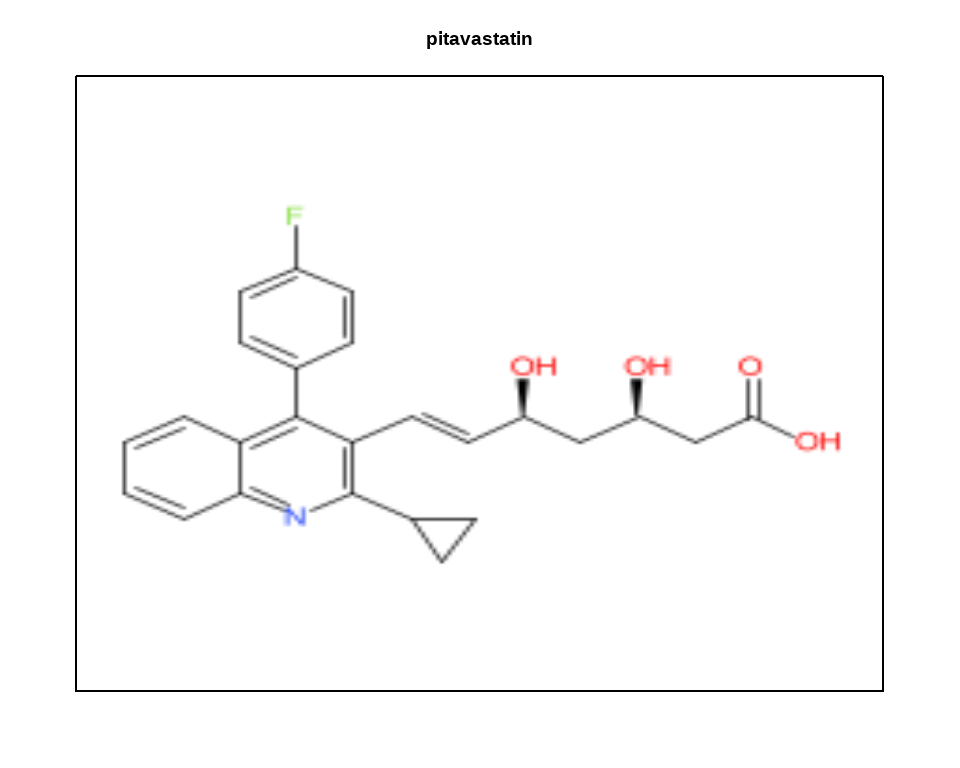
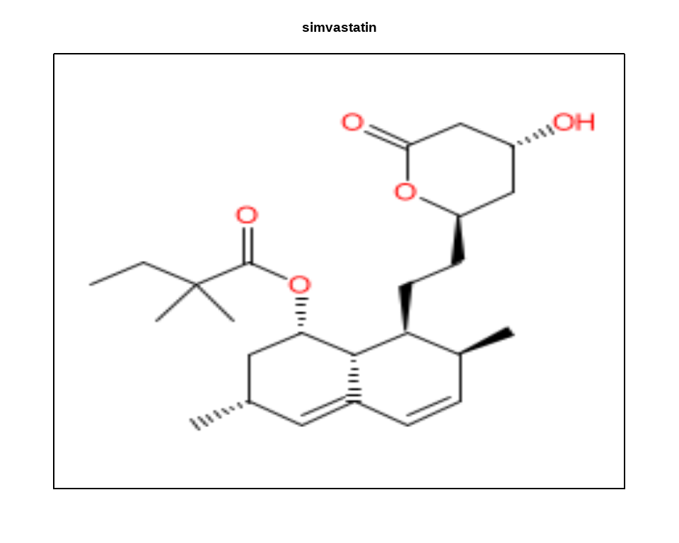
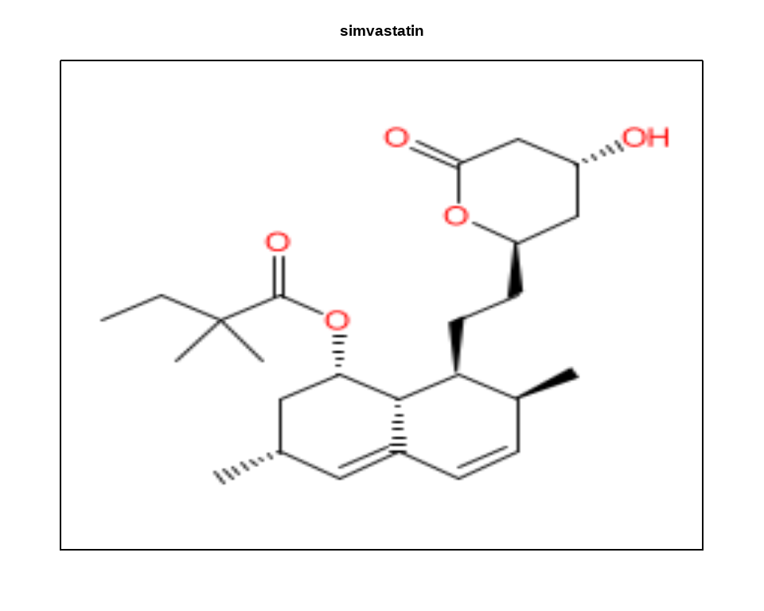

Load Librabry
if (Sys.getenv("JAVA_HOME")!="")
Sys.setenv(JAVA_HOME="")
library(rJava)
options(java.parameters="-Xmx16000m")
require(rcdk) # chemical informatics functionality in R
require(gap) # for qq plots later
options(stringsAsFactors=FALSE)plot molecules in R plot window instead of separate Java window
rcdkplot = function(molecule,marg=0,main='') {
par(mar=c(marg,marg,marg,marg)) # set margins to zero since this isn't a real plot
temp1 = view.image.2d(molecule) # get Java representation into an image matrix. set number of pixels you want horiz and vertical
plot(NA,NA,xlim=c(1,10),ylim=c(1,10),xaxt='n',yaxt='n',xlab='',ylab='',main=main) # create an empty plot
rasterImage(temp1,1,1,10,10) # boundaries of raster: xmin, ymin, xmax, ymax. here i set them equal to plot boundaries
}curcumin = parse.smiles("O=C(\\C=C\\c1ccc(O)c(OC)c1)CC(=O)\\C=C\\c2cc(OC)c(O)cc2")[[1]] rcdkplot(curcumin)Bemis-Murcko scheme
Fragment the input molecule using the Bemis-Murcko scheme. A variety of methods for fragmenting molecules are available ranging from exhaustive, rings to more specific methods such as Murcko frameworks. Fragmenting a collection of molecules can be a useful for a variety of analyses. In addition fragment based analysis can be a useful and faster alternative to traditional clustering of the whole collection, especially when it is large.
curc.frags = get.murcko.fragments(curcumin)
curc.frags## [[1]]
## [[1]]$rings
## [1] "c1ccccc1"
##
## [[1]]$frameworks
## [1] "c1ccc(cc1)C=CCCCC=Cc2ccccc2"rcdkplot(parse.smiles(curc.frags[[1]]$rings)[[1]])rcdkplot(parse.smiles(curc.frags[[1]]$frameworks)[[1]])anle138b = parse.smiles("C1OC2=C(O1)C=C(C=C2)C3=CC(=NN3)C4=CC(=CC=C4)Br")[[1]]
rcdkplot(anle138b)anle138b.frags = get.murcko.fragments(anle138b)
anle138b.frags## [[1]]
## [[1]]$rings
## [1] "O1c2ccccc2OC1" "c1ccccc1"
##
## [[1]]$frameworks
## [1] "n1ccc([nH]1)-c2ccc3OCOc3c2" "n1[nH]c(cc1-c2ccccc2)-c3ccc4OCOc4c3"
## [3] "n1[nH]ccc1-c2ccccc2"rcdkplot(parse.smiles(anle138b.frags[[1]]$rings[1])[[1]])rcdkplot(parse.smiles(anle138b.frags[[1]]$rings[2])[[1]])rcdkplot(parse.smiles(anle138b.frags[[1]]$frameworks[1])[[1]])rcdkplot(parse.smiles(anle138b.frags[[1]]$frameworks[2])[[1]])rcdkplot(parse.smiles(anle138b.frags[[1]]$frameworks[3])[[1]])anle138b.frags = get.murcko.fragments(anle138b,min.frag.size=3)
anle138b.frags[[1]]$rings## [1] "O1c2ccccc2OC1" "c1ccccc1" "n1ccc[nH]1"Load FDA drug list
drugs = read.table('http://www.cureffi.org/wp-content/uploads/2013/10/drugs.txt',
sep='\t',header=TRUE,allowEscapes=FALSE,quote='',comment.char='')Remove those with no SMILES or with a really huge smiles
drugs = drugs[nchar(drugs$smiles) > 0 & nchar(drugs$smiles) < 200,]
drug.objects = parse.smiles(drugs$smiles) # create rcdk IAtomContainer objects for each drugCheck dimensin
# check that lengths are same
dim(drugs) # 1467 3## [1] 1467 3length(drug.objects) # 1467## [1] 1467Extract some strains
statins = c("atorvastatin","fluvastatin","lovastatin","pitavastatin","pravastatin","rosuvastatin","simvastatin")
drugs[tolower(drugs$generic_name) %in% statins,] # check that the statins are in the drug list## generic_name cns_drug
## 139 Atorvastatin FALSE
## 675 Fluvastatin FALSE
## 955 Lovastatin FALSE
## 1282 Pitavastatin FALSE
## 1305 Pravastatin FALSE
## 1411 Rosuvastatin FALSE
## 1447 Simvastatin FALSE
## smiles
## 139 CC(C)C1=C(C(=O)NC2=CC=CC=C2)C(=C(N1CC[C@@H](O)C[C@@H](O)CC(O)=O)C1=CC=C(F)C=C1)C1=CC=CC=C1
## 675 CC(C)N1C(\\C=C\\[C@H](O)C[C@H](O)CC(O)=O)=C(C2=CC=C(F)C=C2)C2=CC=CC=C12
## 955 [H][C@]12[C@H](C[C@@H](C)C=C1C=C[C@H](C)[C@@H]2CC[C@@H]1C[C@@H](O)CC(=O)O1)OC(=O)[C@@H](C)CC
## 1282 O[C@H](C[C@H](O)\\C=C\\C1=C(N=C2C=CC=CC2=C1C1=CC=C(F)C=C1)C1CC1)CC(O)=O
## 1305 [H][C@]12[C@H](C[C@H](O)C=C1C=C[C@H](C)[C@@H]2CC[C@@H](O)C[C@@H](O)CC(O)=O)OC(=O)[C@@H](C)CC
## 1411 CC(C)C1=NC(=NC(C2=CC=C(F)C=C2)=C1\\C=C\\[C@@H](O)C[C@@H](O)CC(=O)O)N(C)S(C)(=O)=O
## 1447 [H][C@]12[C@H](C[C@@H](C)C=C1C=C[C@H](C)[C@@H]2CC[C@@H]1C[C@@H](O)CC(=O)O1)OC(=O)C(C)(C)CCExamine statin structures
for (statin in statins) {
rcdkplot(drug.objects[tolower(drugs$generic_name) == statin][[1]],marg=2,main=statin)
} 

Get all murcko fragments
mfrags = get.murcko.fragments(drug.objects,min.frag.size=3)
mfrags[1:2] # First two## $`NC1=NC2=C(N=CN2[C@@H]2C[C@H](CO)C=C2)C(NC2CC2)=N1`
## $`NC1=NC2=C(N=CN2[C@@H]2C[C@H](CO)C=C2)C(NC2CC2)=N1`$rings
## [1] "n1cnc2[nH]cnc2c1" "C1=CCCC1" "C1CC1"
##
## $`NC1=NC2=C(N=CN2[C@@H]2C[C@H](CO)C=C2)C(NC2CC2)=N1`$frameworks
## [1] "n1cnc2c(ncn2C3C=CCC3)c1NC4CC4" "n1cnc(NC2CC2)c3nc[nH]c13"
## [3] "n1cnc2c(ncn2C3C=CCC3)c1"
##
##
## $`CC(=O)O[C@H]1CC[C@]2(C)C3CC[C@@]4(C)C(CC=C4C4=CN=CC=C4)C3CC=C2C1`
## $`CC(=O)O[C@H]1CC[C@]2(C)C3CC[C@@]4(C)C(CC=C4C4=CN=CC=C4)C3CC=C2C1`$rings
## [1] "C1=CC2CCC3C4C(=CCC3C2C1)CCCC4" "n1ccccc1"
##
## $`CC(=O)O[C@H]1CC[C@]2(C)C3CC[C@@]4(C)C(CC=C4C4=CN=CC=C4)C3CC=C2C1`$frameworks
## [1] "n1cccc(c1)C2=CCC3C2CCC4C5C(=CCC34)CCCC5"Get a list of all possible fragments in any of these drugs
allfrags = unique(unlist(mfrags))
length(allfrags) ## [1] 1664Get only the ring systems
allrings = unique(unlist(lapply(mfrags,"[[",1)))
length(allrings) ## [1] 363Convert drug.objects to a matrix
mat = matrix(nrow=length(drug.objects), ncol=length(allrings))
for (i in 1:length(drug.objects)) {
mat[i,] = allrings %in% mfrags[[i]]$rings
}